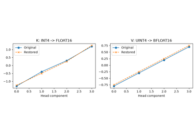
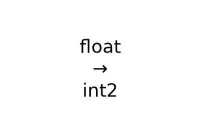

Note
Go to the end to download the full example code.
Uses every portable quantization profile from Python#
This example quantizes and dequantizes all 43 profiles exposed by
onnx_light.onnx_core.quantization. It shows the parameters to supply
for affine, scalar-codebook, vector-codebook, transformed and cast storage.
The profile catalogue describes their numerical
contracts and limitations.
The first 40 are onnx-light representations, not vendor-compatible files.
The three ORT_MATMULNBITS_INT* profiles produce compatible ONNX Runtime
operator inputs, not execution-provider-specific prepacked buffers.
In particular, selecting gptq or awq does not run calibration;
selecting aqlm does not train codebooks. The small synthetic tables below
demonstrate the API, not trained models or recommended quantization quality.
import numpy
from onnx_light import onnx
import onnx_light.onnx.numpy_helper as onh
from onnx_light.onnx_core.quantization import (
QuantizationFormat,
dequantize_tensor_proto,
export_matmul_nbits_inputs,
make_matmul_nbits_plan,
make_quantization_plan,
quantization_format_name,
quantization_formats,
quantize_tensor_proto,
)
Common conversion path#
count is the total number of scalar elements, not the number of
channels or vectors. block_size is measured in those same elements;
the last block may be shorter. Flattening uses row-major logical order.
A plan stores encoding parameters; the resulting message also stores what
the decoder needs, so decoding does not require the plan.
covered = set()
def roundtrip(values, plan):
"""Returns the encoded message and reconstructed NumPy array."""
source = onh.from_array(values, name="weights")
encoded = quantize_tensor_proto(source, plan)
restored = onh.to_array(dequantize_tensor_proto(encoded))
assert restored.shape == values.shape
assert restored.dtype == values.dtype
assert numpy.isfinite(restored).all()
error = float(numpy.max(numpy.abs(restored.astype(numpy.float64) - values)))
block_count = sum(len(run.blocks) for run in plan.runs)
print(
f"{quantization_format_name(plan.format):16s} "
f"runs={len(plan.runs):2d} blocks={block_count:2d} max_abs_error={error:.6g}"
)
covered.add(plan.format)
return encoded, restored
Affine integers and grouped quantization#
int8 and eetq start with signed 8-bit codes; int4 starts with
signed 4-bit codes. gptq, awq and matmulnbits start with unsigned
4-bit codes and zero point 8. q2_k through q6_k start with signed
2–6-bit codes, respectively.
The reconstruction is scale * (code - zero_point) + offset.
The example supplies a range-based scale explicitly; this simple rule is
not GPTQ, AWQ or K-quant calibration. For imported K-quant parameters,
supply effective sub-block scales/offsets, not GGUF packed scale bytes.
plan.runs and plan.run(i) return copies, as do run.blocks and
run.block(i). Assign modified lists back or use the corresponding setters.
A run shares one layout; its blocks store only scales, offsets and codebooks.
weights = numpy.linspace(-1, 1, 16, dtype=numpy.float32).reshape(4, 4)
for profile in (
QuantizationFormat.INT8,
QuantizationFormat.EETQ,
QuantizationFormat.INT4,
QuantizationFormat.GPTQ,
QuantizationFormat.AWQ,
QuantizationFormat.MATMULNBITS,
QuantizationFormat.Q2_K,
QuantizationFormat.Q3_K,
QuantizationFormat.Q4_K,
QuantizationFormat.Q5_K,
QuantizationFormat.Q6_K,
):
plan = make_quantization_plan(profile, weights.size, block_size=4)
run = plan.run(0)
blocks = run.blocks
for block in blocks:
block.scale = 1.0 / (2 ** (run.layout.bits - 1) - 1)
run.blocks = blocks
plan.set_run(0, run)
roundtrip(weights, plan)
int8 runs= 1 blocks= 4 max_abs_error=0.00367454
eetq runs= 1 blocks= 4 max_abs_error=0.00367454
int4 runs= 1 blocks= 4 max_abs_error=0.0666667
gptq runs= 1 blocks= 4 max_abs_error=0.0666667
awq runs= 1 blocks= 4 max_abs_error=0.0666667
matmulnbits runs= 1 blocks= 4 max_abs_error=0.0666667
q2_k runs= 1 blocks= 4 max_abs_error=0.466667
q3_k runs= 1 blocks= 4 max_abs_error=0.133333
q4_k runs= 1 blocks= 4 max_abs_error=0.0666667
q5_k runs= 1 blocks= 4 max_abs_error=0
q6_k runs= 1 blocks= 4 max_abs_error=0.0150538
Per-channel INT8#
int8_per_channel does not infer an axis. For a matrix whose channels
are columns, first gather column values into contiguous blocks. Each block
then has one column’s scale. Decode automatically restores the original
ordering and shape. A zero-valued channel uses scale 1, since scales must
be strictly positive.
weights = numpy.array([[-1, -10, 0], [1, 10, 0]], dtype=numpy.float32)
plan = make_quantization_plan(
QuantizationFormat.INT8_PER_CHANNEL, weights.size, block_size=weights.shape[0]
)
plan.permutation = numpy.arange(weights.size).reshape(weights.shape).T.ravel().tolist()
for channel in range(weights.shape[1]):
run = plan.run(0)
block = run.block(channel)
maximum = float(numpy.max(numpy.abs(weights[:, channel])))
block.scale = maximum / 127 if maximum > 0 else 1.0
run.set_block(channel, block)
plan.set_run(0, run)
_, restored = roundtrip(weights, plan)
numpy.testing.assert_allclose(restored, weights, rtol=0, atol=1e-6)
int8_per_channel runs= 1 blocks= 3 max_abs_error=0
Mixed precision: HQQ, EXL2 and EXL3 families#
These profiles start with signed 4-bit affine blocks. The caller supplies the bit allocation and quantization parameters; the profile name does not select a trained allocation, an EXL vendor layout or an HQQ optimizer.
weights = numpy.array([-1, 0, 1, -2, 0, 2], dtype=numpy.float32)
for profile in (QuantizationFormat.HQQ, QuantizationFormat.EXL2, QuantizationFormat.EXL3):
plan = make_quantization_plan(profile, weights.size, block_size=3)
runs = []
for bits, scale in ((2, 1.0), (5, 0.5)):
run = plan.run(0)
run.layout.bits = bits
block = run.block(0)
block.scale = scale
run.blocks = [block]
runs.append(run)
plan.runs = runs
_, restored = roundtrip(weights, plan)
numpy.testing.assert_array_equal(restored, weights)
hqq runs= 2 blocks= 2 max_abs_error=0
exl2 runs= 2 blocks= 2 max_abs_error=0
exl3 runs= 2 blocks= 2 max_abs_error=0
Fixed scalar codebooks and low-bit floating-point levels#
nf4 provides 16 normal-float levels; iq4_nl provides 16 integer
levels. log provides zero and signed powers of two from 1/8 to 8.
binary uses [-1, 1]. The ternary families use [-1, 0, 1]: five trits
per byte, except tq2_0, which uses two bits per index.
mxfp4/nvfp4 use E2M1 levels; mxfp6/fp6_llm use E3M2
levels; fp8_e4m3 uses finite E4M3FN levels. They store codebook indices,
not the corresponding vendor float bit patterns. MX/NV scale rounding and
products of multiple scale levels must be supplied by the caller.
All these profiles reconstruct scale * codebook[index]. Inspecting
block.codebook gives the actual unscaled levels. Here a NumPy nearest-
level reference also checks the decoder’s output.
weights = numpy.linspace(-1, 1, 17, dtype=numpy.float32)
for profile in (
QuantizationFormat.NF4,
QuantizationFormat.IQ4_NL,
QuantizationFormat.LOG,
QuantizationFormat.BINARY,
QuantizationFormat.TERNARY,
QuantizationFormat.TQ1_0,
QuantizationFormat.TQ2_0,
QuantizationFormat.BITNET,
QuantizationFormat.PARETOQ,
QuantizationFormat.TEQUILA,
QuantizationFormat.MXFP4,
QuantizationFormat.NVFP4,
QuantizationFormat.MXFP6,
QuantizationFormat.FP6_LLM,
QuantizationFormat.FP8_E4M3,
):
plan = make_quantization_plan(profile, weights.size, block_size=weights.size)
run = plan.run(0)
block = run.block(0)
block.scale = 1.0 / 127 if profile == QuantizationFormat.IQ4_NL else 1.0
run.set_block(0, block)
plan.set_run(0, run)
levels = numpy.array(block.codebook) * block.scale
indices = numpy.abs(weights[:, None] - levels[None, :]).argmin(axis=1)
_, restored = roundtrip(weights, plan)
numpy.testing.assert_array_equal(restored, levels[indices].astype(weights.dtype))
nf4 runs= 1 blocks= 1 max_abs_error=0.125
iq4_nl runs= 1 blocks= 1 max_abs_error=0.110236
log runs= 1 blocks= 1 max_abs_error=0.25
binary runs= 1 blocks= 1 max_abs_error=1
ternary runs= 1 blocks= 1 max_abs_error=0.5
tq1_0 runs= 1 blocks= 1 max_abs_error=0.5
tq2_0 runs= 1 blocks= 1 max_abs_error=0.5
bitnet runs= 1 blocks= 1 max_abs_error=0.5
paretoq runs= 1 blocks= 1 max_abs_error=0.5
tequila runs= 1 blocks= 1 max_abs_error=0.5
mxfp4 runs= 1 blocks= 1 max_abs_error=0.25
nvfp4 runs= 1 blocks= 1 max_abs_error=0.25
mxfp6 runs= 1 blocks= 1 max_abs_error=0
fp6_llm runs= 1 blocks= 1 max_abs_error=0
fp8_e4m3 runs= 1 blocks= 1 max_abs_error=0
Supplied vector and additive codebooks#
Defaults are 32 entries of width 4 for stq1_0, 256 entries of width 8
for iq1_s/quip_sharp, and two such 256-entry books for aqlm.
A codebook is flattened in [books, entries, vector_size] order.
Reconstruction sums one selected vector from each book, then multiplies
by scale. The encoder chooses books greedily against the residual.
The synthetic tables below retain those default dimensions. Replace them with trained tables in real applications. QuIP# additionally needs a forward/inverse transform: identity is used here solely to demonstrate the required fields, not as a useful QuIP# rotation.
weights = numpy.linspace(-1, 1, 16, dtype=numpy.float32)
for profile in (
QuantizationFormat.STQ1_0,
QuantizationFormat.IQ1_S,
QuantizationFormat.AQLM,
QuantizationFormat.QUIP_SHARP,
):
plan = make_quantization_plan(profile, weights.size, block_size=weights.size)
run = plan.run(0)
block = run.block(0)
table = numpy.empty((run.layout.books, run.layout.entries, run.layout.vector_size))
for book in range(run.layout.books):
levels = numpy.linspace(-1, 1, run.layout.entries) / (book + 1)
table[book] = levels[:, None]
block.codebook = table.ravel().tolist()
run.set_block(0, block)
plan.set_run(0, run)
if profile == QuantizationFormat.QUIP_SHARP:
plan.transform_size = 8
plan.forward = numpy.eye(8).ravel().tolist()
plan.inverse = plan.forward
roundtrip(weights, plan)
stq1_0 runs= 1 blocks= 1 max_abs_error=0.223656
iq1_s runs= 1 blocks= 1 max_abs_error=0.470588
aqlm runs= 1 blocks= 1 max_abs_error=0.468627
quip_sharp runs= 1 blocks= 1 max_abs_error=0.470588
Sparse outliers: SpQR and SqueezeLLM families#
spqr starts with signed 4-bit affine blocks. squeezellm starts
with a scalar codebook whose 16 levels must be supplied.
outliers contains flattened indices in the ORIGINAL tensor, before
permutation or transformation. Their original values are stored separately
and restored exactly; selection of these indices is not automatic.
weights = numpy.array([0.125, 1000, -0.25, 0.5], dtype=numpy.float32)
for profile in (QuantizationFormat.SPQR, QuantizationFormat.SQUEEZELLM):
plan = make_quantization_plan(profile, weights.size)
plan.outliers = [1]
run = plan.run(0)
block = run.block(0)
if profile == QuantizationFormat.SPQR:
block.scale = 0.125
else:
block.codebook = numpy.linspace(-1, 1, run.layout.entries).tolist()
run.set_block(0, block)
plan.set_run(0, run)
_, restored = roundtrip(weights, plan)
assert restored[1] == weights[1]
spqr runs= 1 blocks= 1 max_abs_error=0
squeezellm runs= 1 blocks= 1 max_abs_error=0.0583333
Rotations and rescaling: QuaRot and SmoothQuant families#
quarot starts with signed 4-bit affine blocks; smoothquant with
signed 8-bit blocks. Both require an explicit inverse pair.
Consecutive row vectors are multiplied by the forward matrix, then
quantized. Decode multiplies by the inverse. Matrices are row-major.
The example supplies an orthogonal rotation or a diagonal rescaling;
neither is calibrated automatically.
weights = numpy.array([1, 2, -1, -2], dtype=numpy.float32)
for profile in (QuantizationFormat.QUAROT, QuantizationFormat.SMOOTHQUANT):
plan = make_quantization_plan(profile, weights.size)
matrix = (
numpy.array([[1, 1], [1, -1]]) / numpy.sqrt(2)
if profile == QuantizationFormat.QUAROT
else numpy.diag([2.0, 0.5])
)
plan.transform_size = 2
plan.forward = matrix.ravel().tolist()
plan.inverse = numpy.linalg.inv(matrix).ravel().tolist()
run = plan.run(0)
block = run.block(0)
block.scale = 0.5
run.set_block(0, block)
plan.set_run(0, run)
roundtrip(weights, plan)
quarot runs= 1 blocks= 1 max_abs_error=0.232233
smoothquant runs= 1 blocks= 1 max_abs_error=0
Cast storage, tiles and column-major order#
tiled_float and column_major default to FLOAT cast storage,
without an implicit reordering. Supply the permutation explicitly.
Here the first plan groups 2-by-2 tiles, the second groups columns;
FLOAT16 storage demonstrates an optional precision reduction.
The reconstructed tensor retains its original FLOAT logical dtype.
weights = numpy.arange(16, dtype=numpy.float32).reshape(4, 4) / 8
indices = numpy.arange(weights.size).reshape(weights.shape)
for profile in (QuantizationFormat.TILED_FLOAT, QuantizationFormat.COLUMN_MAJOR):
plan = make_quantization_plan(profile, weights.size, block_size=4)
if profile == QuantizationFormat.TILED_FLOAT:
plan.permutation = indices.reshape(2, 2, 2, 2).transpose(0, 2, 1, 3).ravel().tolist()
else:
plan.permutation = indices.T.ravel().tolist()
run = plan.run(0)
run.layout.cast_type = onnx.TensorProto.FLOAT16
plan.set_run(0, run)
encoded, restored = roundtrip(weights, plan)
numpy.testing.assert_array_equal(restored, weights)
tiled_float runs= 1 blocks= 4 max_abs_error=0
column_major runs= 1 blocks= 4 max_abs_error=0
Serialization and a model-scoped type catalogue#
Save the encoded message, not the plan. Parsing the bytes preserves the inline layout and all parameters. A model catalogue can instead hold the layout under an identifier; decoding then needs that model as well. This does not register an ONNX operator or make ordinary tensor kernels accept an encoded input.
wire = encoded.SerializeToString()
loaded = onnx.EncodedValueProto()
loaded.ParseFromString(wire)
numpy.testing.assert_array_equal(onh.to_array(dequantize_tensor_proto(loaded)), weights)
model = onnx.ModelProto()
declaration = model.struct_types.add()
declaration.CopyFrom(loaded.struct_type)
declaration.type_id = 91
loaded.struct_type = onnx.StructTypeProto(type_ref=91)
numpy.testing.assert_array_equal(
onh.to_array(dequantize_tensor_proto(loaded, model=model)), weights
)
ONNX Runtime MatMulNBits input packing#
These profiles use the actual ORT B/scales/zero_points input layout. Quantization groups run along K within each column, with a padded final group per column. Unlike the portable MATMULNBITS profile, the extracted tensors can directly become initializers of com.microsoft::MatMulNBits.
weights = (numpy.arange(35 * 3).reshape(35, 3) % 3 - 1).astype(numpy.float32)
for profile in (
QuantizationFormat.ORT_MATMULNBITS_INT2,
QuantizationFormat.ORT_MATMULNBITS_INT4,
QuantizationFormat.ORT_MATMULNBITS_INT8,
):
plan = make_matmul_nbits_plan(profile, 35, 3, block_size=16)
encoded, restored = roundtrip(weights, plan)
numpy.testing.assert_array_equal(restored, weights)
inputs = export_matmul_nbits_inputs(encoded)
assert tuple(inputs.weights.dims) == (3, 3, 16 * inputs.bits // 8)
assert tuple(inputs.scales.dims) == (3, 3)
assert inputs.zero_points is None
print(f"ORT: K={inputs.k}, N={inputs.n}, bits={inputs.bits}, block_size={inputs.block_size}")
ort_matmulnbits_int2 runs= 1 blocks= 9 max_abs_error=0
ORT: K=35, N=3, bits=2, block_size=16
ort_matmulnbits_int4 runs= 1 blocks= 9 max_abs_error=0
ORT: K=35, N=3, bits=4, block_size=16
ort_matmulnbits_int8 runs= 1 blocks= 9 max_abs_error=0
ORT: K=35, N=3, bits=8, block_size=16
Coverage#
The example fails if a public profile has not been demonstrated.
Demonstrated 43 quantization profiles.
Total running time of the script: (0 minutes 0.014 seconds)
Related examples

Quantizes and dequantizes selected pages of a KV cache

Run an ONNX model casting a float tensor into an int2 tensor
Gallery generated by Sphinx-Gallery
Example last updated
- Date:
2026-10-04